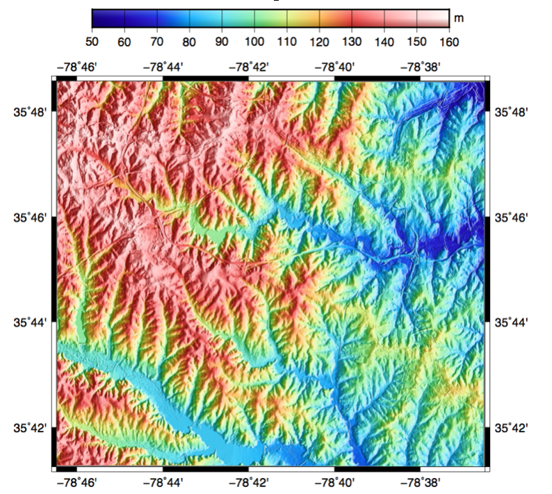

Observera
Detta projekt ingår endast på OSGeoLives virtuella maskindisk (VMDK)
GMT Snabbstart¶
GMT är en samling verktyg som gör det möjligt för användare att manipulera (x,y) och (x,y,z) datauppsättningar (inklusive filtrering, trendanpassning, rutnät, projicering etc.) och producera EPS-illustrationer (Encapsulated PostScript File) som sträcker sig från enkla x-y-plottar via konturkartor till artificiellt belysta ytor och 3D-perspektivvyer i svartvitt, gråton, hachure-mönster och 24-bitars färg.
I denna snabba GMT-handledning kommer vi att använda en digital terrängmodell (DTM) för att generera en skuggad reliefkarta.
Innehåll
Skapa en karta¶
Som ingångsdataset använder vi en DTM från GRASS GIS-exempeldataset, som är tillgängligt för GDAL med hjälp av GDAL-GRASS-drivrutinen.
För att få en snabb titt på DTM-metadata öppnar du en terminal och använder GDAL-kommandot gdalinfo:
gdalinfo /home/user/grassdata/nc_basic_spm_grass7/PERMANENT/cellhd/elevation
Vi kan se att DTM är i ett projicerat koordinatsystem och att dataintervallet är mellan 50 och 160 meter.
Vi kan konvertera DTM till ett GMT-kompatibelt netCDF-filformat med gdal_translate enligt följande:
gdal_translate -of GMT /home/user/grassdata/nc_basic_spm_grass7/PERMANENT/cellhd/elevation elevation.gmt
För vårt GMT-exempel omvandlar vi först datasetet till geografiska koordinater Longitud-Latitud (EPSG:4326) med kommandot gdalwarp:
gdalwarp elevation.gmt geo_elevation.gmt -t_srs EPSG:4326
Skapa en färgpalett¶
För att tilldela en färgkarta till vårt rutnät kan vi skapa en GMT-färgpalettstabell med kommandot makecpt. Vi kommer att ställa in intervallet och antalet färger med flaggan -T och tilldela en färgkarta med flaggan -C.
gmt makecpt -Chaxby -T50/160/10 -Z > elevation.cpt
Du kan experimentera med andra colortables, se man gmt makecpt för en fullständig lista.
Definiera lutningen¶
För vårt exempel med skuggad relief måste vi ange hur färgintensiteten fördelas längs rutnätet. För att göra detta beräknar vi riktningsderivatan, eller gradienten, från vårt rutnät med kommandot grdgradient. I grdgradient använder vi flaggan -Ne för att normalisera utdata med hjälp av en kumulativ Laplace-distribution och flaggan -A för azimutal riktning för en riktningsderivat.
gmt grdgradient geo_elevation.gmt -Ne0.8 -A100 -fg -Ggradient.nc
Utdata är en netCDF-fil som sedan kan användas som färgintensitet med kommandot grdimage enligt följande:
gmt grdimage geo_elevation.gmt -Igradient.nc -JM6i -P -Ba -Celevation.cpt -K > GMT_tut_OSGeoLive.ps
Visa färgfältet¶
Slutligen kan vi lägga till en färgfält med psscale:
gmt psscale -DjTC+w5i/0.25i+h+o0/-1i -Rgeo_elevation.gmt -J -Celevation.cpt -I0.4 -By+lm -O >> GMT_tut_OSGeoLive.ps
Här används flaggan -D för att välja färgfältets position TC: Top Center, storleken 5x0.25 uttryckt i tum i orienteringen med h: horisontell och flaggan -By för att sätta en etikett m på y-axeln.
Det utgående ps-dokumentet bör se ut så här:
{kind=link}
Saker att prova¶
Installera följande paket:
gmt-dcw
gmt-gshhg
GMT handledning <https://docs.generic-mapping-tools.org/latest/tutorial>
Hur vill du gå vidare?¶
Dokumentation: https://docs.generic-mapping-tools.org/latest/
Webbplats: https://www.generic-mapping-tools.org